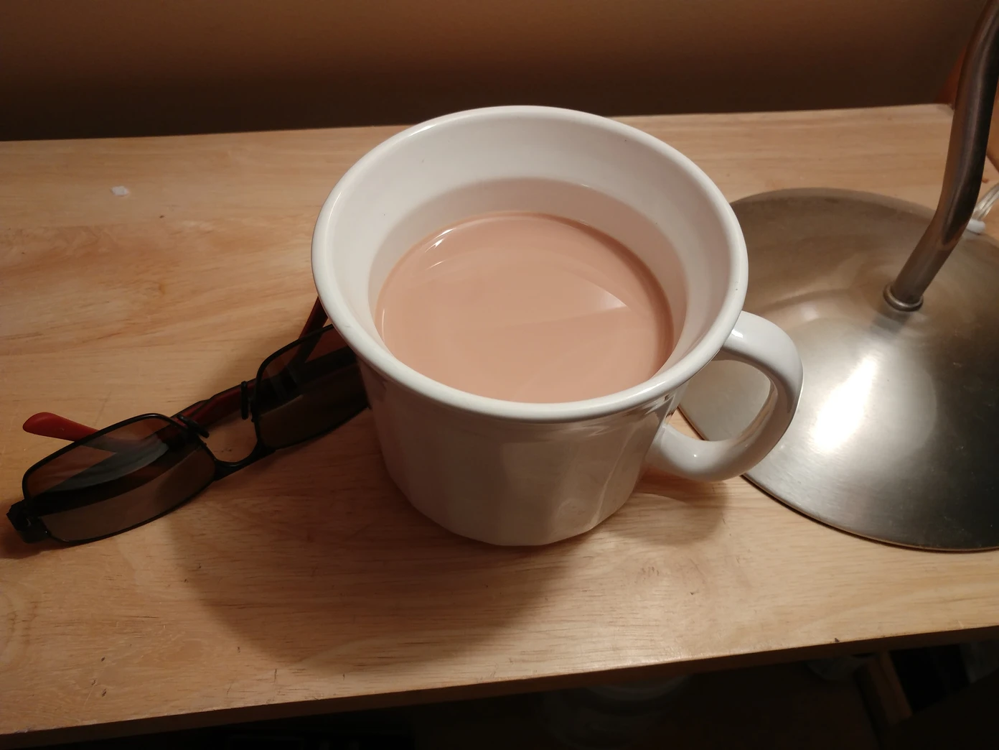
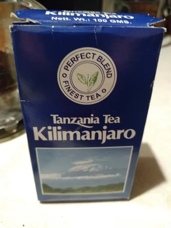

Tanzanian Tea w/ Milk

This is a very traditional simple beverage from Tanzania, a country in East Africa. While I stayed there in Mwanza and Dar es Salaam, they would always have this option for breakfast (or in general).
- ⏲️ Prep time: 5-10 min
- 🍳 Cook time: 3-8 min
- 🍽️ Servings: 1
Ingredients
- Black Ceylon Tea (Preferably, you want a dark, herbal flavor from your tea. I have some from Dar es Salaam, but when I tried researching, I couldn’t find out what kind of tea it is. No, they didn’t list the ingredients on the box lol)
- Milk/Sweet Cream
- Sweetener (Sugar, Syrup, Monk Fruit extract, etc.) (optional, but recommended)
Directions

- Bring some hot water to boil and seep the tea. Depending on how strong you like it, you can do this for up to 10 min at most. Be warned; typically black teas are very strong.
- When done seeping, add in the milk (or cream).
- Sweeten to taste. Remember you can always add more if there isn’t enough.